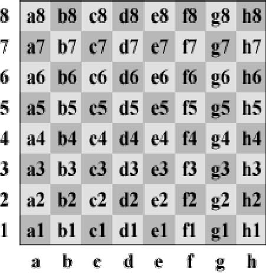

Leyes del Ajedrez
Las Leyes del Ajedrez te indicarán como jugar al ajedrez

La FIDE sólo reconoce para sus propios torneos y encuentros un sistema de notación, el Sistema Algebraico, y recomienda también el uso de este sistema uniforme de notación ajedrecística para literatura y revistas de ajedrez. Las planillas en las que se utilice un sistema de notación distinto al algebraico, no podrán ser utilizadas1 como prueba en casos en los que la planilla de un jugador se usa normalmente para tal fin. Un árbitro que observe que un jugador utiliza un sistema de notación distinto al algebraico, advertirá al jugador acerca de este requisito. Descripción del Sistema Algebraico C.1 En esta descripción, pieza significa cualquier pieza excepto un peón. C.2 Cada pieza es indicada por una abreviatura. Es la primera letra, en mayúscula, de su nombre. Por ejemplo, en español: R = rey, D = dama, T = torre, A = alfil, C = caballo. C.3 Para la abreviatura del nombre de las piezas, cada jugador es libre de usar la primera letra del nombre utilizado normalmente en su país. Por ejemplo: F = fou (alfil en francés); L = loper (alfil en holandés). En publicaciones impresas se recomienda el uso de figuras. C.4 Los peones no son indicados por su primera letra, sino que se les reconoce por la ausencia de la misma. Por ejemplo: los movimientos se escriben e5, d4, a5, no pe5, Pd4, pa5. C.5 Las ocho columnas (de izquierda a derecha para el Blanco y de derecha a izquierda para el Negro) son indicadas por las letras minúsculas: a, b, c, d, e, f, g y h, respectivamente. C.6 Las ocho filas (de abajo arriba para el Blanco y de arriba abajo para el Negro) están numeradas: 1, 2, 3, 4, 5, 6, 7 y 8, respectivamente. Consecuentemente, en la posición inicial las piezas y peones blancos se colocan en la primera y segunda filas; las piezas y peones negros en la octava y séptima filas. C.7 Como consecuencia de las reglas anteriores, cada una de las 64 casillas está indicada invariablemente por una sola combinación de una letra y un número.  C.8 Cada movimiento de una pieza se indica por (a) la abreviatura del nombre de la pieza en cuestión y (b) la casilla de llegada. No hay guión entre (a) y (b). Por ejemplo: Ae5, Cf3, Td1. En el caso de peones, sólo se indica la casilla de llegada. Por ejemplo: e5, d4, a5. C.9 Cuando una pieza realiza una captura, puede insertarse una x entre (a) la abreviatura del nombre de la pieza en cuestión y (b) la casilla de llegada. Por ejemplo: Axe5, Cxf3,Txd1. Véase también C10. Cuando un peón realiza una captura, debe indicarse la columna de partida, luego puede insertarse una x y finalmente la casilla de llegada. Por ejemplo: dxe5, gxf3, axb5. En el caso de una captura al paso, se puede añadir la anotación "a.p.". Ejemplo: exd6 a.p.. C.10 Si dos piezas idénticas pueden moverse a la misma casilla, la pieza que se mueve se indica como sigue: 1. Si ambas piezas están en la misma fila: por (a) la abreviatura del nombre de la pieza, (b) la columna de la casilla de salida y (c) la casilla de llegada. 2. Si ambas piezas están en la misma columna: por (a) la abreviatura del nombre de la pieza, (b) la fila de la casilla de salida y (c) la casilla de llegada. Si las piezas están en filas y columnas distintas, es preferible el método 1. Ejemplos: a. Hay dos caballos, en las casillas g1 y e1, y uno de ellos mueve a la casilla f3: según el caso, puede ser Cgf3 o Cef3. b. Hay dos caballos, en las casillas g5 y g1, y uno de ellos mueve a la casilla f3: según el caso, puede ser C5f3 o C1f3. c. Hay dos caballos, en las casillas h2 y d4, y uno de ellos mueve a la casilla f3: según el caso, puede ser Chf3 o Cdf3. d. Si se da una captura en la casilla f3, se modifican los ejemplos anteriores pudiéndose insertar una x: según el caso, puede ser (1) Cgxf3 o Cexf3, (2) C5xf3 o C1xf3, (3) Chxf3 o Cdxf3. C.11 En el caso de la promoción de un peón, se indica el movimiento efectivo del peón, seguido inmediatamente por la abreviatura de la nueva pieza. Por ejemplo: d8D, exf8C, b1A, g1T. C.12 La oferta de tablas se anotará como (=). C.13 Abreviaturas: 0-0 enroque con la torre de h1 o de h8 (enroque por el flanco de rey o enroque corto). 0-0-0 enroque con la torre de a1 o de a8 (enroque por el flanco de dama o enroque largo). x captura + jaque ++ o # mate a.p. captura al paso Las últimas cuatro son opcionales Ejemplo de partida: 1. e4 e5 2. Cf3 Cf6 3. d4 exd4 4. e5 Ce4 5. Dxd4 d5 6. exd6 a.p. Cxd6 7. Ag5 Cc6 8. De3+ Ae7 9. Cbd2 0-0 10. 0-0-0 Te8 11. Rb1 (=).O: 1. e4 e5 2. Cf3 Cf6 3. d4 ed4 4. e5 Ce4 5. Dd4 d5 6. ed6 Cd6 7. Ag5 Cc6 8. De3 Ae7 9 Cbd2 0-0 10. 0-0-0 Te8 11. Kb1 (=)